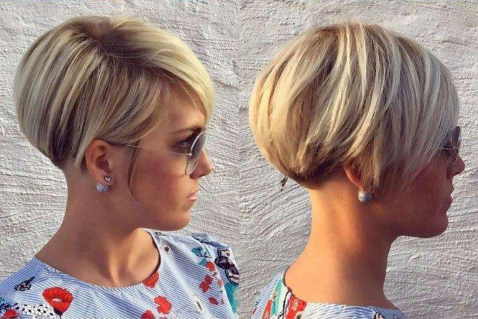

О нас
Мои записи
Женские стрижки
Мужские стрижки
|  |
Название: Короткое карэ Время услуги: 45-60 минут Стоимость: 3500 рублей Максимальная длина укороченного карэ - до подбородка, а бывает еще короче. |

|
Название: Каскад Время услуги: 60-75 минут Стоимость: 4000 рублей Еще один очень универсальный вариант, но в отличие от карэ - более легкий и дерзкий. Каскад с равным краем придает объем прямым волосам и помогает упорядочить кудряшки. |
|
Название: Окрашивание Время услуги: 120-150 минут Стоимость: 7000 рублей Окрашивание - до сих пор популярный элемент стрижки. Поволяет подчеркнуть стиль стрижки и сделать ее более идентичной. |
Запись онлайн |
Запись онлайн |
Запись онлайн |